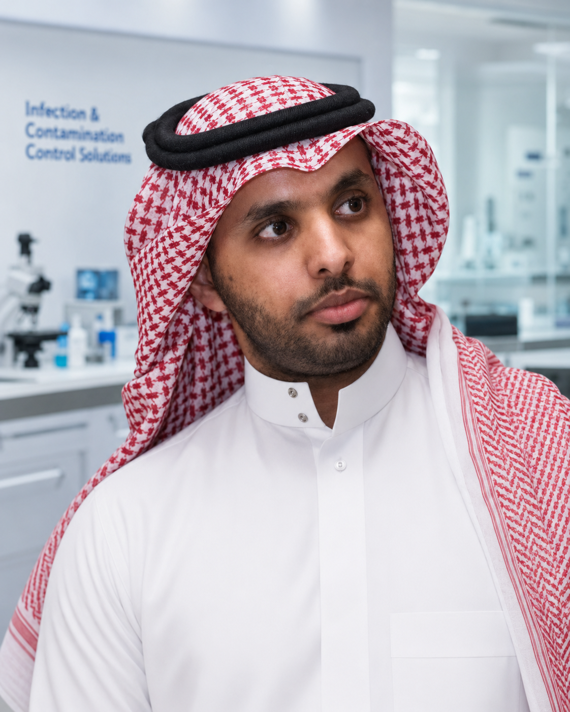
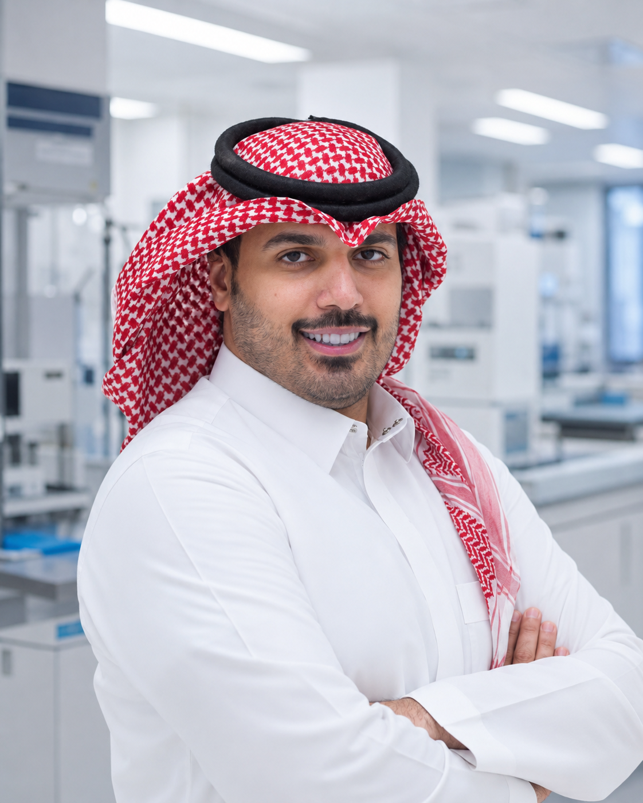
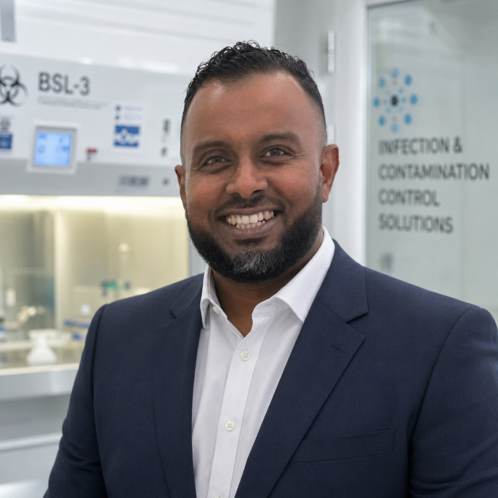
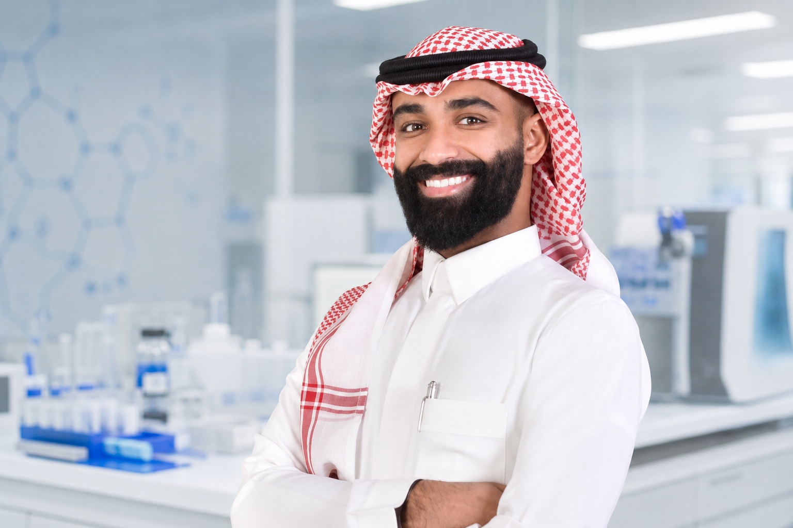

Built for critical environments. Guided by responsibility.
Since 2016, Masarat has supported organizations that depend on clean, safe and controlled environments — laboratories, healthcare facilities, pharmaceutical spaces, research centers and technical teams, where performance is not just a preference. It is a responsibility.
We build, equip, validate and maintain spaces where air quality, containment, safety and reliability can affect people, processes and important decisions.
Because critical spaces protect more than operations
A cleanroom is not just a room. A safety cabinet is not just equipment. A certification report is not just paperwork.
Behind every controlled environment are people doing important work — protecting patients, handling sensitive samples, producing regulated products, conducting research, or keeping teams safe. We understand that responsibility. It is the reason we care about details that may not always be visible, but always matter.
We help clients create environments they can trust
Three connected capabilities that support clients from early planning to long-term performance.
Controlled Environment Solutions
Cleanrooms, biocontainment laboratories, air filtration and environmental monitoring. We care about these spaces because they protect sensitive work and the people using them every day.
Explore Build arrow_right_altLaboratory & Safety Products
Safety cabinets, benches, fume hoods, autoclaves, freezers, centrifuges, incubators, furniture and instruments. Not catalog items — each has a role in protecting the operator, the sample or the work.
Explore Equip arrow_right_altTechnical Services
Commissioning, qualification, validation, testing, certification, maintenance, installation, consultancy and training. We believe performance should be proven, not assumed.
Explore Test & Maintain arrow_right_altClear from the beginning. Careful until the end.
We begin by understanding the client's real requirement before recommending a solution. We ask questions, explain options, and avoid pushing unnecessary complexity.
Our work is guided by practical thinking, proper documentation and careful execution. We care about what happens after handover — not only what looks complete on delivery day. A successful project, to us, is one that continues to serve the people who rely on it.
Critical environments are delivered by people first
Our team brings together technical knowledge, field experience, project discipline and a shared responsibility toward the clients and facilities we support.

Founded Masarat in 2016 and leads its mission to deliver critical environments the Kingdom can trust.

Leads project delivery and operations with a focus on reliable execution and long-term client support.

Leads administration and operations support, keeping standards, documentation and service quality consistent across projects.

Coordinates service and maintenance to keep clients' facilities performing reliably long after handover.
The way we work matters as much as what we deliver
Integrity
We speak honestly about scope, standards, timelines and limitations. Trust is built through clarity.
Quality
We care about the small technical details — they are often the difference between looking right and performing reliably.
Responsibility
Our work supports sensitive spaces and important human outcomes. We treat that responsibility seriously.
Partnership
We work with clients as long-term partners — we listen, explain, support, and respect the pressure they carry.
Standards help turn trust into evidence
Our credentials, procedures and technical reports reflect a commitment to recognized standards and responsible practice. For us, credentials are not decoration — they are part of a disciplined way of working, so clients know critical systems are handled with care, structure and accountability.
Because we care about the outcome, not only the delivery
Clients choose Masarat when they need a partner who understands both the technical and human importance of critical environments — confidence that the space is controlled, the equipment is suitable, the testing is reliable, and the support will continue when needed.
That confidence is earned in the work itself, and kept through the support that follows.
Let's talk about what your environment needs
Whether you're planning a new facility, upgrading laboratory equipment, or validating an existing space, Masarat can help you move forward with clarity, care and confidence.